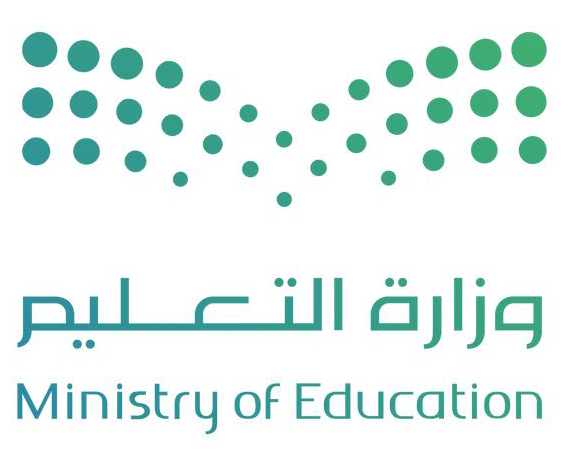

الخطة التشغيلية التفاعلية
الإدارة العامة للتعليم بمنطقة مكة المكرمة - العام الدراسي 1447 هـ
مقدمة الخطة التشغيلية
📊 توزيع الطالبات على الصفوف
🏫 المرافق والموارد المدرسية
يعتمد نجاح المدرسة على نجاح المسؤول عنها ومدى كفاءته وقدرته على التخطيط، وقد أصبح التخطيط ضرورياً وهاماً لكل مجالات الحياة، وهو أكثر أهمية في المجال التربوي. ولكي يكون العاملون بالمدرسة قادرين على بناء خطط العمل المدرسي فلا بد أن يكونوا ملمين ومتفهمين لمعنى التخطيط وأهميته وفوائده، وكيفية بناء الخطة وتنفيذها ومتابعتها وتطويرها.
ولا بد لهم أن يتيقنوا أن التخطيط عملية أو نشاط مستمر ودائم التجدد، يتضمن عملية وضع الأهداف وتحديدها وتنفيذها واختيار وسائل وطرق تقويم العمل ومتابعته وتطويره.
رؤية ورسالة وزارة التعليم بالمملكة
رؤية ورسالة الإدارة العامة للتعليم بالمنطقة
الأهداف الاستراتيجية لوزارة التعليم
قواعد السلوك والمواظبة 1445 هـ
سياسة التعليم بالمملكة العربية السعودية
دليل الخطط الدراسية للعام 1447 هـ
الدليل التنظيمي والإجرائي لمدارس التعليم العام
الخطة الوزارية للوائح والأنشطة والمبادرات
نتائج الطلاب للعام الدراسي السابق
نتائج المدرسة في التقويم الذاتي والخارجي
• الشراكة مع المتدربين والخوات في تطوير البيئة المدرسية
• قاعة مصادر التعلم
• موارد المقصف المدرسي
• الشراكة المجتمعية
الرؤية والرسالة والقيم
🏛️ رؤية ورسالة وزارة التعليم
الرؤية
تحقيق تعليم شامل للجميع يعزز القيم ويضعنا في صدارة المنافسة العالمية ويمكن الأفراد والمجتمعات من اكتساب مهارات ذات جودة عالية.
الرسالة
تقديم تعليم ذي جودة عالية بكودار مؤهلة معزز للقيم، متاح للجميع، ضمن بيئة آمنة ومحفزة لإعداد أفراد فاعلين في المجتمع ومساهمين في صناعة وطن رائد عالمياً.
🏫 رؤية ورسالة وقيم المدرسة
رؤية المدرسة
تحقيق تعليم شامل يعزز القيم ويمكن الأفراد والمجتمع من المنافسة عالمياً باكتساب مهارات عالية الجودة.
رسالة المدرسة
نلتزم بتقديم تعليم عالي الجودة، يتركز على كفاءات مؤهلة وقيم راسخة، في بيئة تعليمية آمنة ومحفزة، تعد أفراداً فاعلين ومؤثرين في مجتمعهم مساهمين في تحقيق تطلعات وطن طموح يتبوأ مكانة عالمية.
الأهداف الاستراتيجية
🏛️ أهداف وزارة التعليم - العشرة الاستراتيجية
2. تطوير بيئة مدرسية آمنة وابتكارية.
3. تعزيز القيم والهوية الوطنية.
4. تحسين تجربة المستفيدين.
5. الاستثمار في الطالب والمدارس الأولى بالرعاية.
7. رفع كفاءة الإنفاق وتعزيز الاستدامة المالية.
8. تطوير كفاءات الموارد البشرية وتعزيز الثقافة المؤسسية.
9. الارتقاء بمستوى التجربة الرقمية.
10. تعزيز الحوكمة والالتزام وإدارة المخاطر.
غاية التعليم وأهدافه العامة: تهدف السياسة التعليمية بالمملكة إلى تمكين العقيدة الإسلامية في نفس الطالب وجعلها ضابطة لسلوكه وتصرفاته، وتزويده بالخبرات والمعارف الملائمة لسنه، وتشويقه إلى البحث عن المعرفة، وتنمية قدراته العقلية والمهارات المختلفة، وتربيته على الحياة الاجتماعية الإسلامية.
بيانات المدرسة
👩🎓 توزيع الطالبات (سعوديين / غير سعوديين)
📚 صعوبات التعلم حسب الصف
| الاسم | المؤهل | التخصص | خبرة كمعلمة | كوكيلة | كمديرة |
|---|---|---|---|---|---|
| ثريا عمر مدني | بكالوريوس | لغة عربية | 8 سنوات | 6 سنوات | 5 سنوات |
| الصف | الأول | الثاني | الثالث | الرابع | الخامس | السادس | الإجمالي |
|---|---|---|---|---|---|---|---|
| عدد الطالبات | 79 | 76 | 98 | 105 | 87 | 62 | 509 |
لجنة التميز بالمدرسة
| التاريخ | المهمة | الزمن | العضو المكلف |
|---|---|---|---|
| الأحد 1447/3/1 | اجتماع أعضاء اللجنة | 7 ص | مديرة المدرسة |
| الأحد 1447/3/8 | تحليل الوثائق والملفات والسجلات | 7 ص | فريق التميز |
| الأحد 1447/3/15 | ملاحظة المبنى المدرسي والتجهيزات | 7 ص | - |
| الأحد 1447/3/22 | المقابلات مع الكوادر التعليمية والإدارية | 7 ص | فريق التميز |
| الأحد 1447/3/29 | مقابلة المتعلمين | 7 ص | التوجيه الطلابي |
تحليل واقع المدرسة - SWOT
💪 نقاط القوة
- توفر المدرسة فرص متكافئة للتعلم بمن فيهم ذو الإعاقة والموهوبين
- تنوع المدرسة استراتيجيات التدريس
- وجود معلمات حاصلات على جوائز في مشاركات خارجية
- تفعيل مبادرات تنمي المهارات العددية والقرائية
- تفعيل برامج تشجع على تقوية روابط العاطفية والاجتماعية
- وجود معلمات حاصلات على شهادات عليا وتخصصية
- يظهر الطالبات اتجاهات إيجابية نحو الاعتزاز بالوطن
- موقع المدرسة المتميز
⚠️ نقاط الضعف
- عدم تجهيز الفصول الدراسية بمصادر التعليم الإلكتروني
- اشتراك الفصول المدرسية مع المدرسة المسائية
- عدم توفر صالة رياضية تدعم الأنشطة الرياضية
🌱 الفرص
- وجود برامج نوعية في القيم (المواطنة - التسامح - السلوك الإيجابي)
- استغلال المساحات الخارجية للمبنى لإنشاء مرافق مساندة لدعم التعلم و الانشطة
- تنوع مهن و خبرات أولياء الأمور و امكانية توظيفها في دعم العملية التعليمية والانشطة المتنوعة التي تدعم المدرسة
- تفعيل الشراكة المجتمعية (المجتمع المدرسي والمحلي)
🚨 التهديدات
- وجود اعداد كبيرة جداً من الطالبات في البيئة الصفية
- وجود نسبة كبيرة من الطالبات الغير نطقات بالغة العربية
مؤشرات الأداء
📊 مقارنة الواقع بالطموح (9 مؤشرات رئيسية)
🎯 رادار الأداء - المجالات الرئيسية
📈 نتائج الاختبارات الوطنية (نافس) حسب المادة
البرامج والمبادرات
🚀 توزيع البرامج على المجالات
📊 نسب إنجاز البرامج الرئيسية
متابعة تنفيذ البرامج
📊 نسب الإنجاز للبرامج الرئيسية
| م | البرنامج | التنفيذ | نسبة المنفذ | أهم المخرجات | الصعوبات |
|---|---|---|---|---|---|
| 1 | برنامج الخطة التشغيلية | تم | 100% | تحسين التحصيل وبيئة التعلم | صعوبات بسيطة في تنظيم الوقت |
| 2 | الرخصة المهنية | تم | 100% | تأهيل المعلمات ورفع الكفاءة | تفاوت في التحصيل |
| 3 | الذكاء الاصطناعي | تم | 100% | زيادة التفاعل والفهم | ضعف الالتزام أحياناً |
| 4 | الألعاب الإلكترونية | تم | 100% | تعلم تفاعلي وتحسين إدارة الحصة | حاجة بعض المعلمات للدعم |
| 5 | كافنا للمعلم | تم | 100% | تفعيل التعلم التفاعلي | حاجة للدعم الفني |
| 6 | كنوز الإلكترونية | تم | 100% | مصادر رقمية داعمة | قلة استخدام المصادر |
| 7 | علمي رسول الله | تم | 100% | تعزيز القيم الإسلامية | ضعف التفاعل أحياناً |
| 8 | بيننا سند | تم | 100% | تعزيز الدعم النفسي | تفاوت المشاركة |
| 9 | أثر | تم | 100% | قياس الأثر وتحسين الأداء | صعوبة قياس النتائج |
التقويم الدراسي والمناسبات
| البيان | الهجري | الميلادي |
|---|---|---|
| عودة الهيئة الإدارية والمشرفين التربويين | 1447/2/18 | 2025/8/12 |
| عودة المعلمين والمعلمات للدوام | 1447/2/23 | 2025/8/17 |
| بداية العام الدراسي | 1447/3/1 | 2025/8/24 |
| إجازة اليوم الوطني | 1447/4/1 | 2025/9/23 |
| إجازة الخريف | 1447/4/20 | 2025/10/12 |
| إجازة منتصف الفصل الأول | 1447/5/30 | 2025/11/21 |
| بداية اختبارات الفصل الأول | 1447/6/8 | 2025/11/29 |
| إجازة منتصف العام | 1447/6/20 | 2025/12/14 |
| بداية الفصل الدراسي الثاني | 1447/7/22 | 2026/1/11 |
| إجازة يوم التأسيس | 1447/8/2 | 2026/2/22 |
| بداية إجازة عيد الفطر | 1447/9/17 | 2026/3/6 |
| الدراسة بعد إجازة عيد الفطر | 1447/10/2 | 2026/3/22 |
| إجازة عيد الأضحى | 1447/12/3 | 2026/5/22 |
| بداية اختبارات الفصل الثالث | 1447/12/12 | 2026/6/1 |
| بداية إجازة نهاية العام | 1448/1/10 | 2026/6/25 |
| بداية العام الدراسي القادم | 1448/3/10 | 2026/8/23 |
🇸🇦 المناسبات الوطنية والخليجية
🌍 المناسبات الدولية والعالمية
الهيكل التنظيمي للمدرسة
ملاحظات:
• موظفة خدمات: عامل بسيط للقيام بأعمال النظافة العامة.
• المساعد الإداري (شؤون المعلمات والرواتب) هو من يقوم بأعمال الخدمات الإدارية.
اعتماد الخطة التشغيلية
| م | الاسم | الوظيفة | التوقيع |
|---|---|---|---|
| 1 | ثريا مدني | مديرة المدرسة | _____________ |
| 2 | شيماء الحربي | وكيلة الشؤون التعليمية | _____________ |
| 3 | زينب لبان | وكيلة الشؤون الطلابية | _____________ |
| 4 | جميلة اللقماني | الموجه الطلابية | _____________ |
| 5 | عهود الصبحي | رائدة النشاط | _____________ |
| 6 | عزيزة اللقماني | رائدة النشاط | _____________ |
| 7 | فادية المجنوني | معلمة | _____________ |
| 8 | عائشة الأسمري | مساعد إداري | _____________ |
مديرة المدرسة
ثريا مدني
📌 تم اعتماد الخطة التشغيلية للعام الدراسي 1447 هـ
الإدارة العامة للتعليم بمنطقة مكة المكرمة - الابتدائية الرابعة والثلاثون بعد المائة